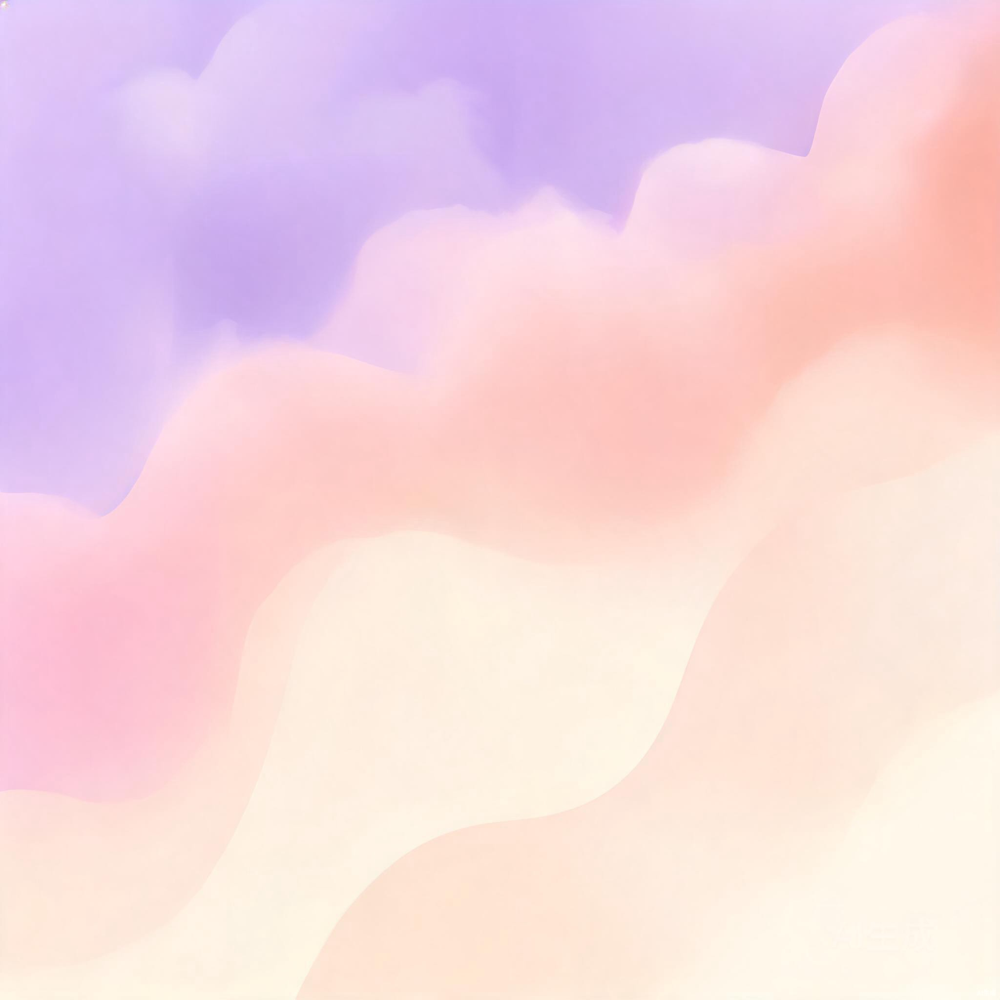
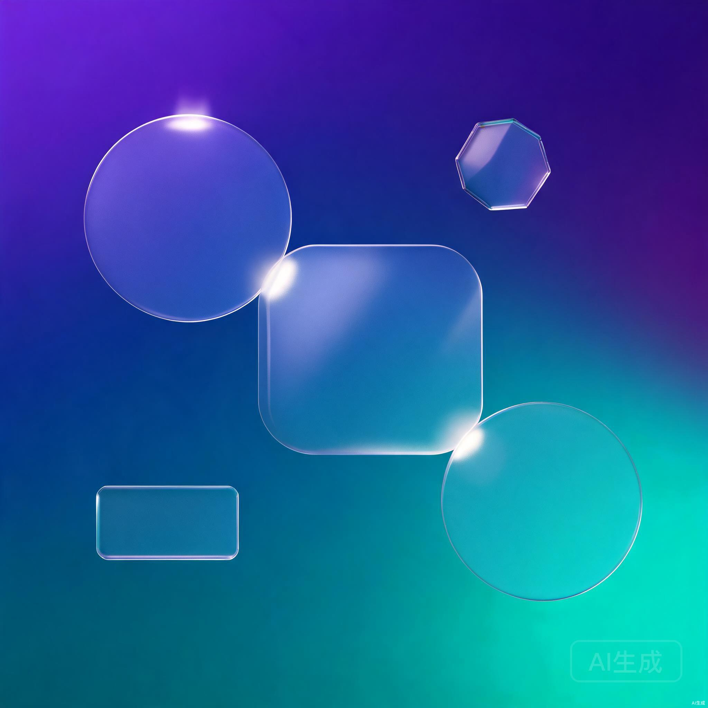

设置中心
壁纸

当前使用
山湖暮色
5.2K 下载
点击切换
海上日落
2.8K 下载
点击切换
迷雾森林
1.5K 下载
点击切换
城市夜色
3.4K 下载

点击切换
梦幻柔光
980 下载

点击切换
几何抽象
2.1K 下载
主题
动态效果
粒子背景动画
桌面上显示动态粒子效果
毛玻璃效果
窗口与组件使用磨砂玻璃质感
鼠标轨迹特效
移动鼠标时显示光迹粒子
窗口样式
圆角卡片
柔和圆润
毛玻璃面板
通透质感
极简线条
简约清爽